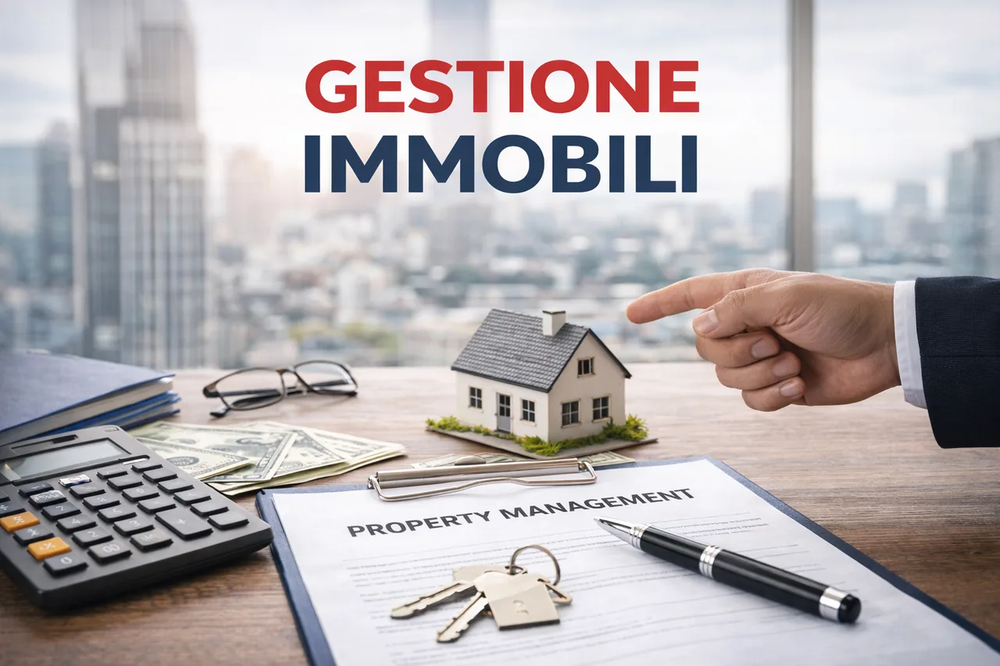

Ponte San Nicolo': vivere a due passi da Padova
Ponte San Nicolo' e' il comune residenziale a sud di Padova, con circa 13.500 abitanti e un collegamento diretto con i quartieri Guizza e Voltabarozzo. A soli 6 km dal centro citta', confina con Legnaro e Saonara e offre un ambiente familiare, servizi completi e un mercato immobiliare attraente con prezzi tra 1.500 e 2.200 euro/mq. Quattro frazioni — centro, Roncaglia, Rio e Roncajette — con caratteri distinti e un'alta qualita' della vita.
Qualita' della vita alle porte di Padova
Il comune lungo il Bacchiglione conta circa 13.500 abitanti ed e' situato immediatamente a sud di Padova, in continuita' urbana con i quartieri di Guizza e Voltabarozzo. Confina anche con Legnaro e Saonara. Questa posizione privilegiata — a soli 6 km dal centro citta' — lo rende una delle scelte preferite da famiglie e professionisti che cercano spazi piu' ampi a prezzi piu' accessibili rispetto al capoluogo.
Il comune offre servizi completi per la vita quotidiana: scuole dall'infanzia alle medie con istituto comprensivo proprio, supermercati, farmacie, ambulatori medici, ufficio postale, centro sportivo comunale con piscina e palestra, e ampie aree verdi lungo le sponde del Bacchiglione. La piazza centrale con la chiesa parrocchiale e' il punto di riferimento della comunita', con il mercato settimanale e eventi culturali durante tutto l'anno.
Il territorio comunale si articola in quattro frazioni con caratteristiche distinte: Ponte San Nicolo' centro, cuore commerciale e amministrativo con la maggior parte dei servizi; Roncaglia, frazione a est con un tessuto residenziale consolidato e un'identita' di paese ben definita; Rio, zona piu' rurale a sud con case indipendenti e ampi spazi verdi; Roncajette, piccola frazione residenziale a nord, la piu' vicina al capoluogo. Chi sceglie questa realta' della cintura urbana cerca la dimensione umana di un paese ben servito, con la comodita' di essere a 10 minuti dal centro citta'.
Righetto Immobiliare per Ponte San Nicolo'
Operiamo dal 2000 su tutto il territorio di Padova e provincia, con una conoscenza approfondita del mercato immobiliare di Ponte San Nicolo' e delle sue frazioni.
Dalla nostra sede di Via Roma 96, Limena (PD) seguiamo acquirenti e venditori in tutta la cintura padovana.
Prezzi e opportunita' a Ponte San Nicolo'
Il mercato immobiliare di Ponte San Nicolo' e' tra i piu' dinamici della cintura sud di Padova. La domanda e' costante e i prezzi mostrano una tendenza al rialzo moderata, sostenuta dalla vicinanza diretta con la citta' e dalla qualita' dei servizi comunali. Secondo i dati OMI dell'Agenzia delle Entrate, nel 2026 il prezzo medio degli appartamenti si attesta sui 1.650 euro/mq, mentre le ville singole raggiungono i 1.980 euro/mq.
Rispetto ai quartieri confinanti di Padova come Guizza e Voltabarozzo, Ponte San Nicolo' offre metrature piu' generose e prezzi inferiori del 15-20%. Una villa bifamiliare con giardino da 180-200 mq che a Padova supera i 320.000 euro, qui si trova a partire da 250.000-280.000 euro. Per gli investitori, il rapporto prezzo/rendita e' tra i migliori dell'area sud, con canoni di locazione in crescita grazie alla domanda di famiglie che lavorano a Padova.
Le zone piu' richieste sono il centro e Roncaglia per la vicinanza ai servizi, mentre Rio e Roncajette attraggono chi cerca piu' verde e tranquillita'. Le nuove costruzioni in classe energetica A, sempre piu' frequenti lungo la direttrice principale, raggiungono i 2.200 euro/mq con giardino e garage.
| Tipologia | €/mq |
|---|---|
| Appartamento | 1650 € |
| Villa singola | 1980 € |
| Villa bifamiliare | 1815 € |
| Capannone / Commerciale | 540 € |
| Terreno edificabile | 260 € |
Cosa si trova a Ponte San Nicolo'
Il patrimonio edilizio di Ponte San Nicolo' e' prevalentemente residenziale, con una buona varieta' di tipologie che spaziano dalle ville indipendenti agli appartamenti in contesti condominiali di piccole dimensioni. Le frazioni offrono soluzioni differenti per budget e stile di vita.
Ville singole e bifamiliari
La tipologia piu' presente a Ponte San Nicolo': ville con giardino privato su lotti da 300 a 800 mq, spesso su due livelli con autorimessa doppia. Superfici dai 150 ai 280 mq. Le costruzioni recenti offrono classe energetica A, impianto fotovoltaico e riscaldamento a pavimento. Molto richieste nelle frazioni di Rio e Roncaglia.
Villette a schiera
Soluzione ideale per giovani famiglie: prezzo piu' accessibile della villa singola, con giardino privato e ingresso indipendente. Superfici tra 110 e 170 mq, spesso con garage doppio e taverna. Diversi complessi residenziali recenti lungo la direttrice centro-Roncaglia.
Appartamenti
Condomini di 6-12 unita' con posti auto e aree verdi condominiali. Bilocali e trilocali tra 55 e 100 mq, adatti a coppie, single e investitori. Concentrati nel centro e a Roncajette, con costi di gestione contenuti e buona domanda locativa grazie alla vicinanza con Padova.
Rustici e case coloniche
Nella fascia rurale verso Rio e lungo il Bacchiglione si trovano rustici e case coloniche con terreno, ristrutturati o da ristrutturare. Lotti generosi da 500 a 3.000 mq, ideali per chi desidera privacy, orto e contatto diretto con la campagna veneta a pochi minuti dalla citta'.
Muoversi da Ponte San Nicolo'
Ponte San Nicolo' gode di una posizione strategica per chi si muove verso Padova e il resto del Veneto. La SP92 (via Romana Aponense) collega direttamente il centro a Padova Guizza in circa 10 minuti di auto, mentre la SP3 conduce verso Legnaro e Saonara. La tangenziale sud di Padova e il casello autostradale di Padova Sud (A13 Bologna-Padova) sono raggiungibili in soli 5 minuti, rendendo agevoli gli spostamenti verso Bologna, Ferrara e il sud del Veneto.
Il servizio di autobus APS/Busitalia collega Ponte San Nicolo' alla stazione ferroviaria di Padova con corse frequenti nelle ore di punta (linee urbane ed extraurbane). La ciclabile lungo il Bacchiglione permette di raggiungere Padova centro in bicicletta in circa 20 minuti, un'alternativa sempre piu' utilizzata. Per chi viaggia in treno, la stazione di Padova e' a soli 6 km, con collegamenti alta velocita' verso Milano, Venezia, Bologna e Roma. La vicinanza al polo universitario di Agripolis (Legnaro) e' un ulteriore vantaggio per studenti e ricercatori.
Cerchi casa a Ponte San Nicolo'?
Conosciamo il mercato immobiliare di Ponte San Nicolo' e di tutta la cintura sud di Padova. Possiamo aiutarti a trovare la casa perfetta o a vendere il tuo immobile al miglior prezzo. Contattaci per una consulenza gratuita e senza impegno.